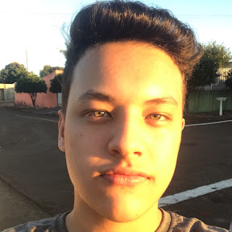

Conheça nossos palestrantes

Ramon Moraes Polverini
Título da Palestra: "Inovação e Tecnologia"
Descrição: Ramon Moraes Polverini é especialista em tecnologia e inovação, com anos de experiência em grandes empresas de tecnologia.
Luiz Ricardo Gonzaga Araujo
Título da Palestra: "Transformação Digital nas Empresas"
Descrição: Luiz Ricardo Gonzaga Araujo é um consultor em transformação digital e tem ajudado diversas empresas a se modernizarem com sucesso.
Adler Bartlo Koneski
Título da Palestra: "Analista de dados"
Descrição: Adler Bartlo Koneski é um analista de dados experiente, que vem para nós dar experiência de problemas e erros do dia a dia.

Matheus Henrique Pereira Gangini
Título da Palestra: "Famoso Preguiçoso"
Descrição: Matheus Henrique não faz nada, só dorme e come mesmo
João Nilton Ramos Filho
Título da Palestra: "Front-End"
Descrição:João Nilton é um programador front-end